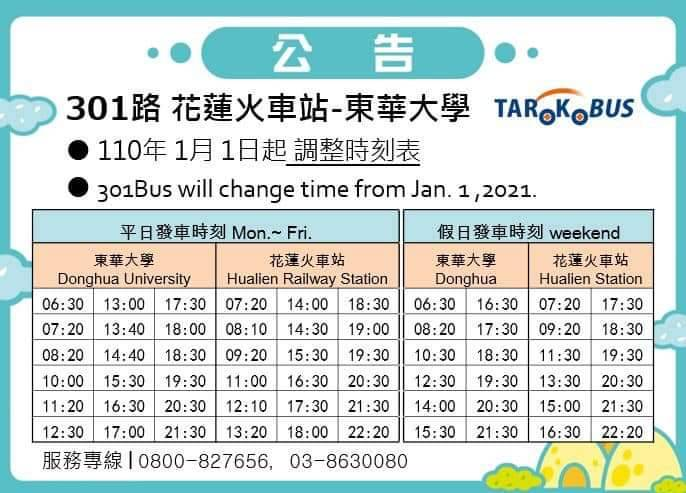
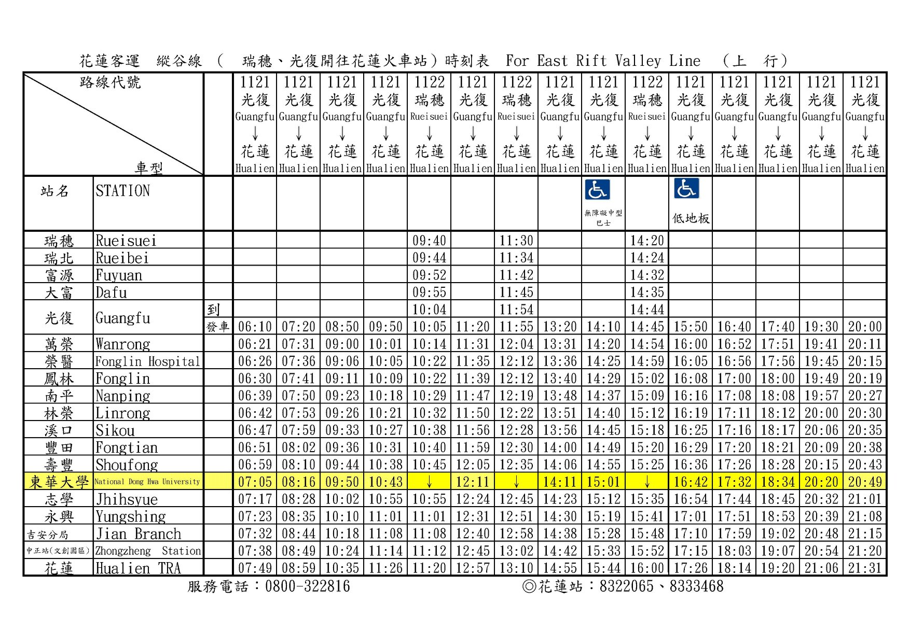
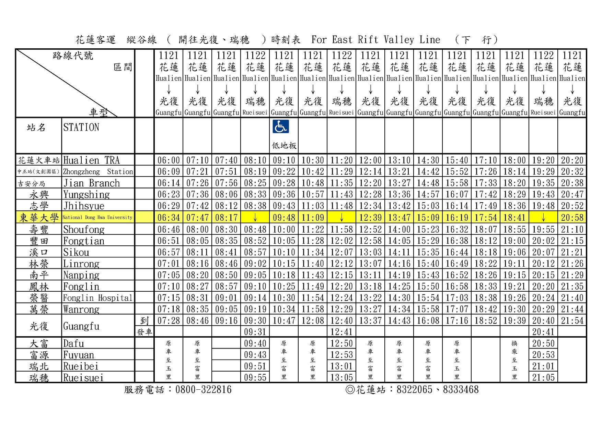

Transportation
Bus
Our university is located 30 minutes away from Hualien city, thus it is very inconvenient for us to
go there without a scooter or a car.Taking the bus is one of the things you may consider.
In NDHU, we have shuttle bus which goes inside the campus which is very convenient for
students who are going to the city or somewhere between our campus and the city.
There are two buses that can take you to Hualien city, which two are 301 bus and 1121 bus.
You can always monitor the bus schedule and which station it is stopping at in current time from the iBus app.
Just go to play store or app store on your mobile phone and search for "iBus_公路客運",
after you have downloaded the app, you can input any bus route# you would like to monitor and there you go!
| Bus 301 |
Bus 1121 |
|

|


|
Train
Another option of public transportation is the train. If you are considering to take the train to go to the city(or somewhere else),
you can go to this website and check the train timetable.
All you need to do is fill in your departure station, arrival station also the time you wish to leave, and there you go!
Taxi
The last option you may consider is taking the taxi. There is one taxi company which our school is collaborating with, named 全家（Quánjiā）.
The only thing you need to do is to call 0800255255 and tell the taxi driver the location you want to be picked up at.
For example :
你好我要叫車, 我在(Nǐ hǎo wǒ yào jiào chē, wǒ zài) = Hello I would like to call a car, I'm at)...>
1.東華大學圖書館(Dōnghuá dàxué túshū guǎn) = NDHU library
2.志學火車站(Zhì xué huǒchē zhàn) = Zhixue train station
etc.
This taxi would usually cost around 250NT$ to 280NT$ if you are a student,
and are coming or going to Hualien city from the campus area
Bicycle
Going around in campus might be a bit too exhausting if you don't owe a bicycle.(unless you own an electric scooter or anything better).
Because of this, you should consider buying a bicycle as it will make your campus life easier and a little more convenient.
There is usually a bike auction in the beginning of each semester in which you can get a second-hand bike for less than 400NT$.
You can also get a new one from the bicycle shop at NDHU back gate(the one by the intersection), prices vary around 1000NT$~5000NT$ depending on brands.